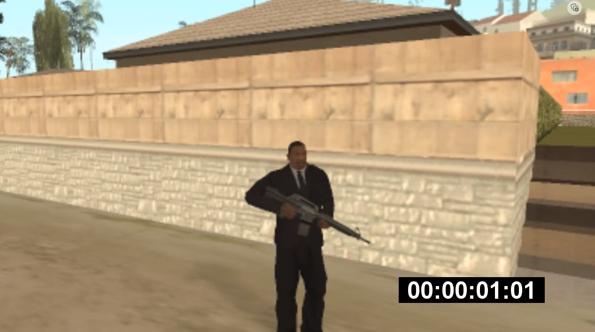
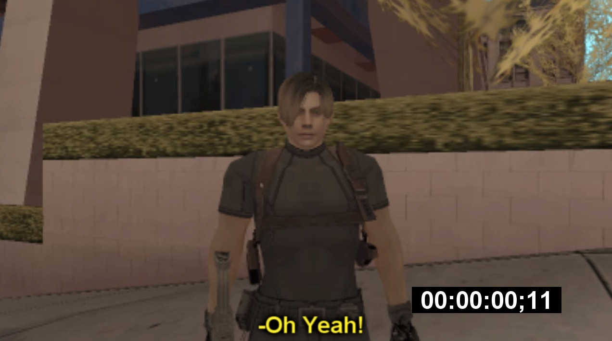
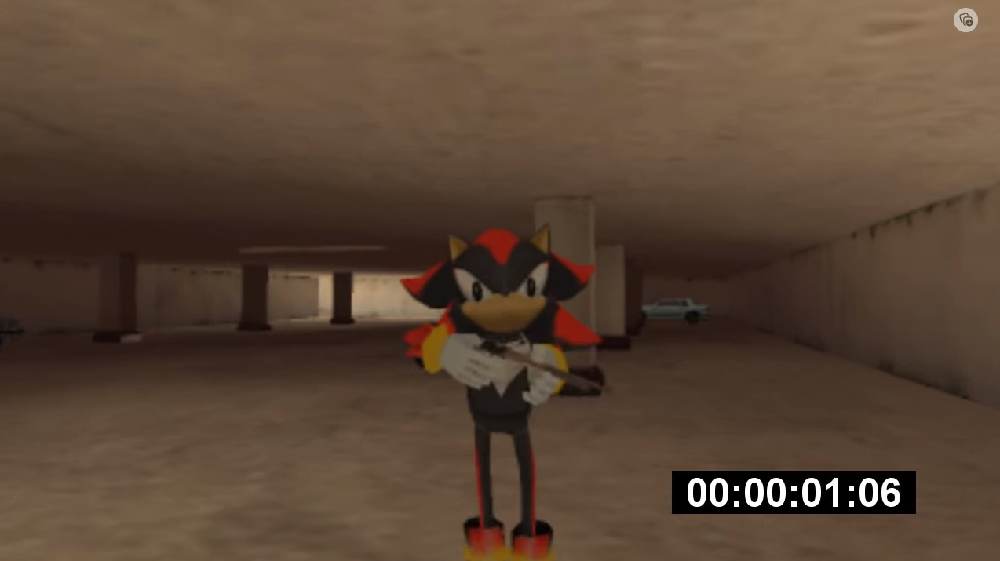

Mythbusters

CJ
Ele é considerado o líder do grupo e sempre anda com o uniforme da MIB. Fundou o grupo com o Leon há alguns meses e já caçou vários monstros.
Dublador: Franko

Leon
Um misterioso ex-policial da classe de estranhos que queria começar a caçar monstros depois de um incidente com um vampiro. Ele conheceu o CJ em um bar e desde então caçam diferentes tipos de monstros por toda San Andreas juntos.
Dublador: Cloud / Yan

Shadow
O último a entrar no grupo e também é um cidadão da classe de estranhos de San Andreas. Ele é o mais azarado do grupo e, assim como todos os estranhos, não tem memórias de sua vida antes de 7 meses atrás.
Dublador: Rômulo